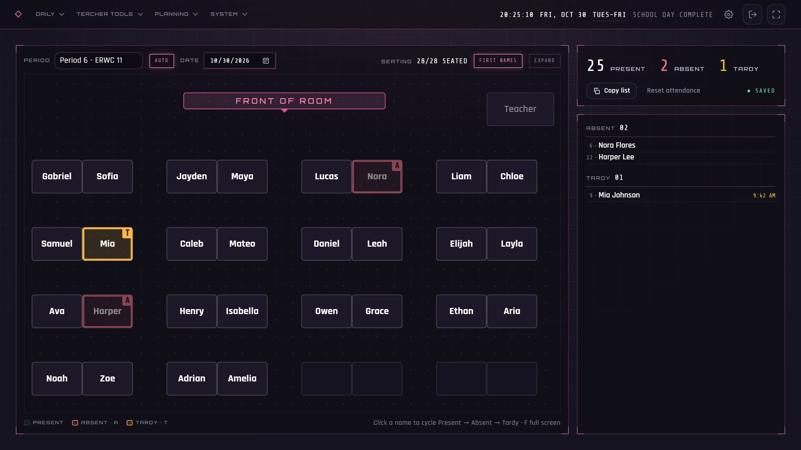

Attendance
Take roll on your own seating chart.
- Click a seat once for absent, twice for tardy (with the time it happened).
- Counts and the absent and tardy lists update as you go, in roster-number order for entering into your SIS.
- Copy the list in one click, or look back at any past day.